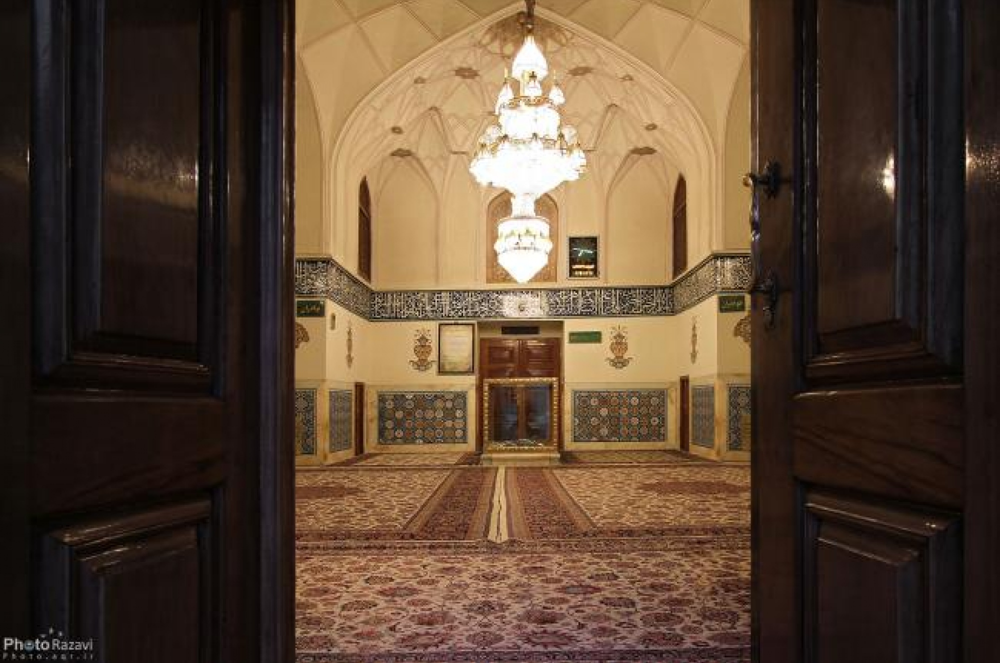

کلیک شما دریافت شد.
تایید شد
درگاه اصلی آستان قدس رضوی
صفحه اصلی
اخبار برگزیده
حرم شناسی
زندگی رضوی
صفحه نخست
اخبار
حرم شناسی
چهارشنبه های امام رضایی
زندگی رضوی
ویدئو
پادکست
کتاب رضوی
شماره تماس های آستان قدس
ویژه نامه ها
ستاد خبری حراست
ارسال پیام
اماکن
بیشتر
۱۴۰۱/۰۵/۰۷
روضه منوره حرم امام رضا(ع)

۱۴۰۱/۰۵/۰۷
مقبره پیر پالاندوز
۱۴۰۱/۰۵/۰۷
مدفن امام رضا (ع)
خدمات
بیشتر
۱۴۰۱/۰۵/۰۷
موقوفات دارالشفاء امام رضا (ع)
۱۴۰۱/۰۵/۰۷
زائرسرای رضوی
۱۴۰۱/۰۵/۰۷
زائرشهر رضوی
آیین و مراسمات
بیشتر
۱۴۰۱/۰۵/۰۷
آیین خطبهخوانی شب عاشورا در حرم امام رضا (ع)
۱۴۰۱/۰۵/۰۷
روایت ۴ قرن عزاداری در حرم امام رضا(ع)
۱۴۰۱/۰۵/۰۷
نگاهی به آیین سنتی صلات در حرم مطهر امام رضا(ع)
هنر های بکار رفته در حرم
بیشتر
۱۴۰۱/۰۵/۰۷
خوانچههای جواهرات در روضه منوره حرم امام رضا(ع)
۱۴۰۱/۰۵/۰۷
آینهکاری در حرم امام رضا (ع)
۱۴۰۱/۰۵/۰۷
گوی فیروزهای ایوان نقارهخانه حرم امام رضا (ع)
ستاد خبری حراست
ارتباط با ما